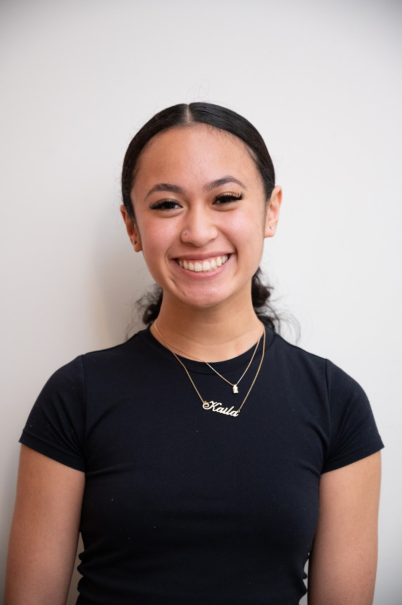

Hello!
My name is Kaila Aquino, I am a fourth year
Computer Science student at Cal Poly SLO.
Planning project flows and designing intuitive user interfaces with Figma prototypes are some of my favorite aspects!
Currently, I’m managing an e-commerce database by writing an API for a fictional potion shop as part of my databases class.
I'm actively seeking internship and job opportunities for Summer 2025.
About me:
I am passionate about the process of developing software, from brainstorming ideas to delivering the final product.Planning project flows and designing intuitive user interfaces with Figma prototypes are some of my favorite aspects!
Currently, I’m managing an e-commerce database by writing an API for a fictional potion shop as part of my databases class.
I'm actively seeking internship and job opportunities for Summer 2025.
